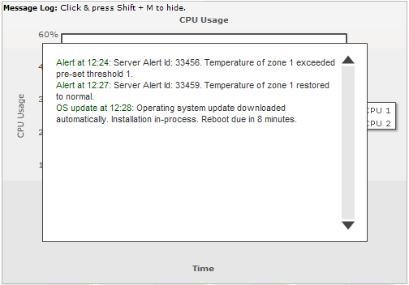

Data-streaming Charts > Message Logger |
FusionWidgets v3 introduces a new concept of streaming and showing real-time messages in the chart using Message Logger. The Message logger can be effectively used to show necessary real-time information or live error logs. Essentially, the message logger is a text based scrollable window that can listen to messages streamed from server and then do one of the following:
A simple message logger in a chart looks something as under: |
|  |
All the data-streaming charts in FusionWidgets v3 can use Message Logger. Please see the section "Message Logger" to see how to implement message logger for your charts. |